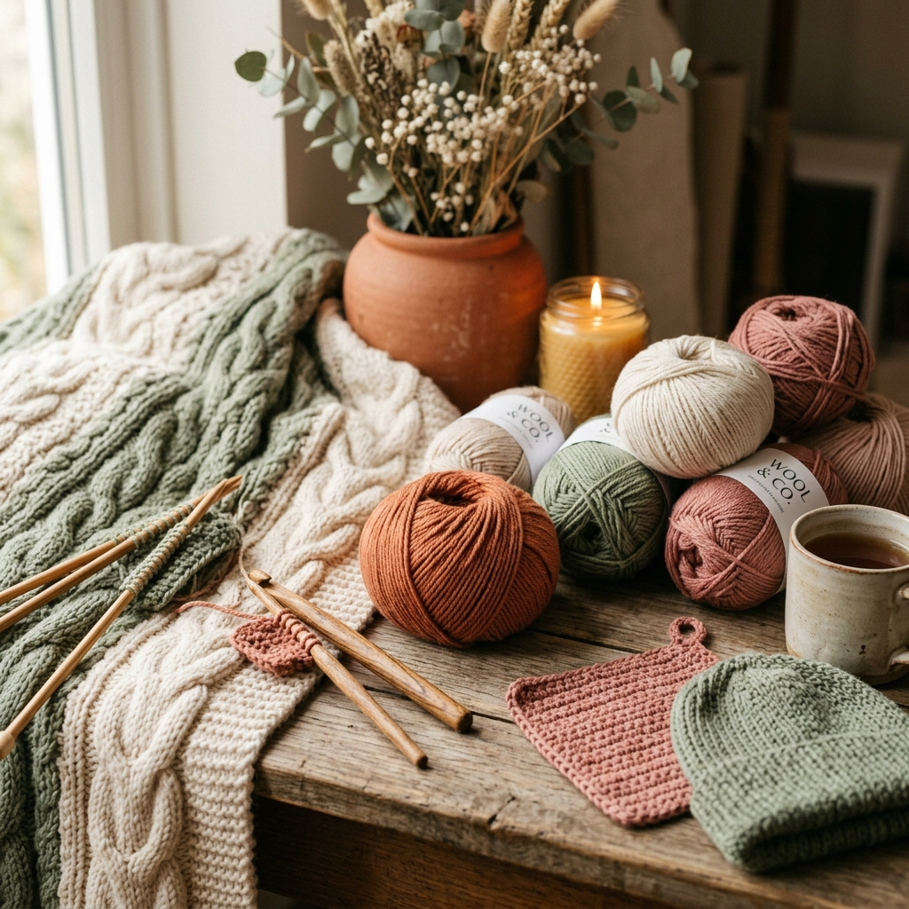
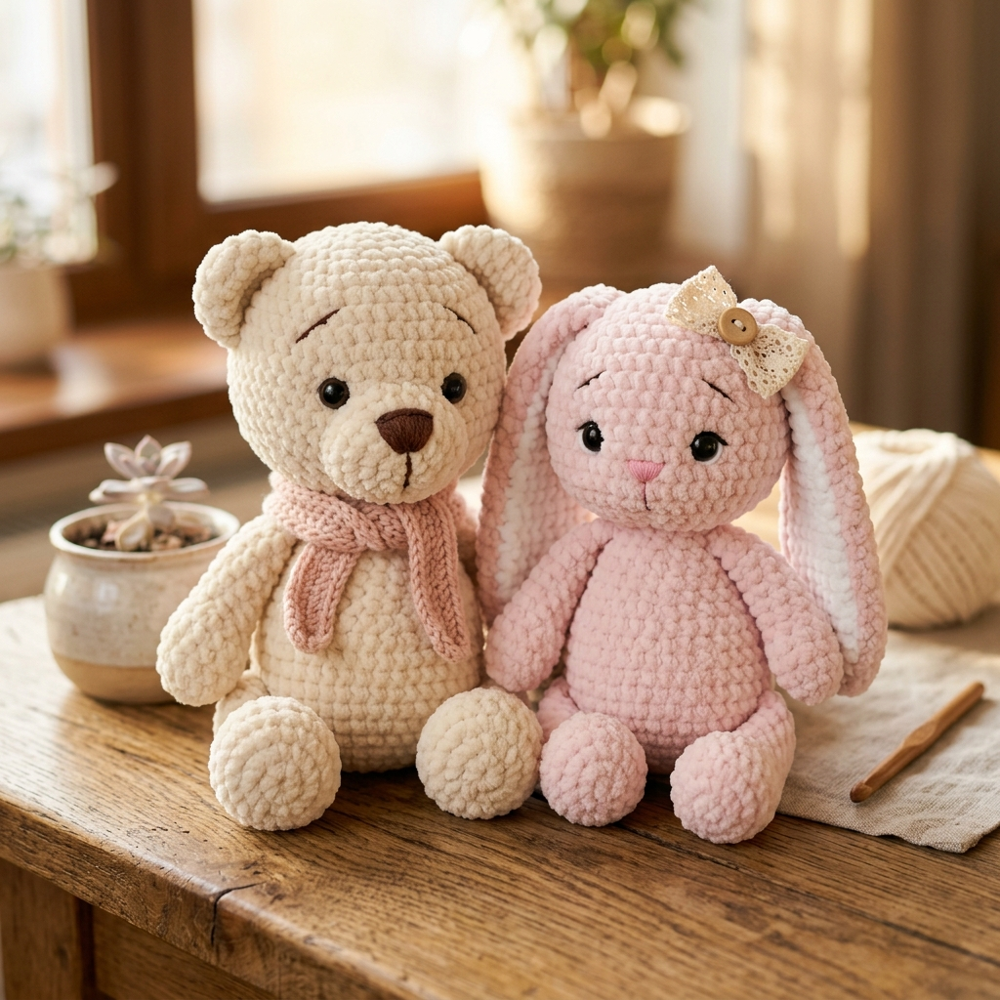
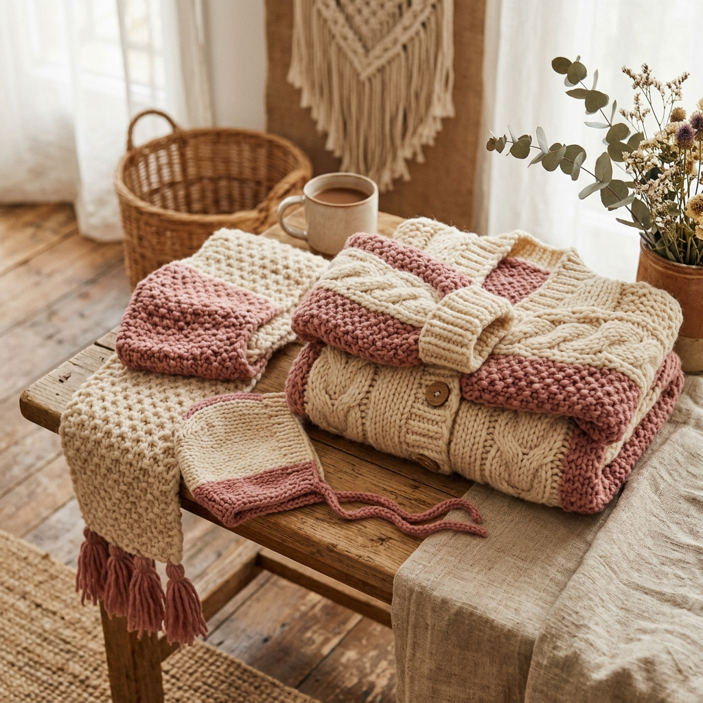
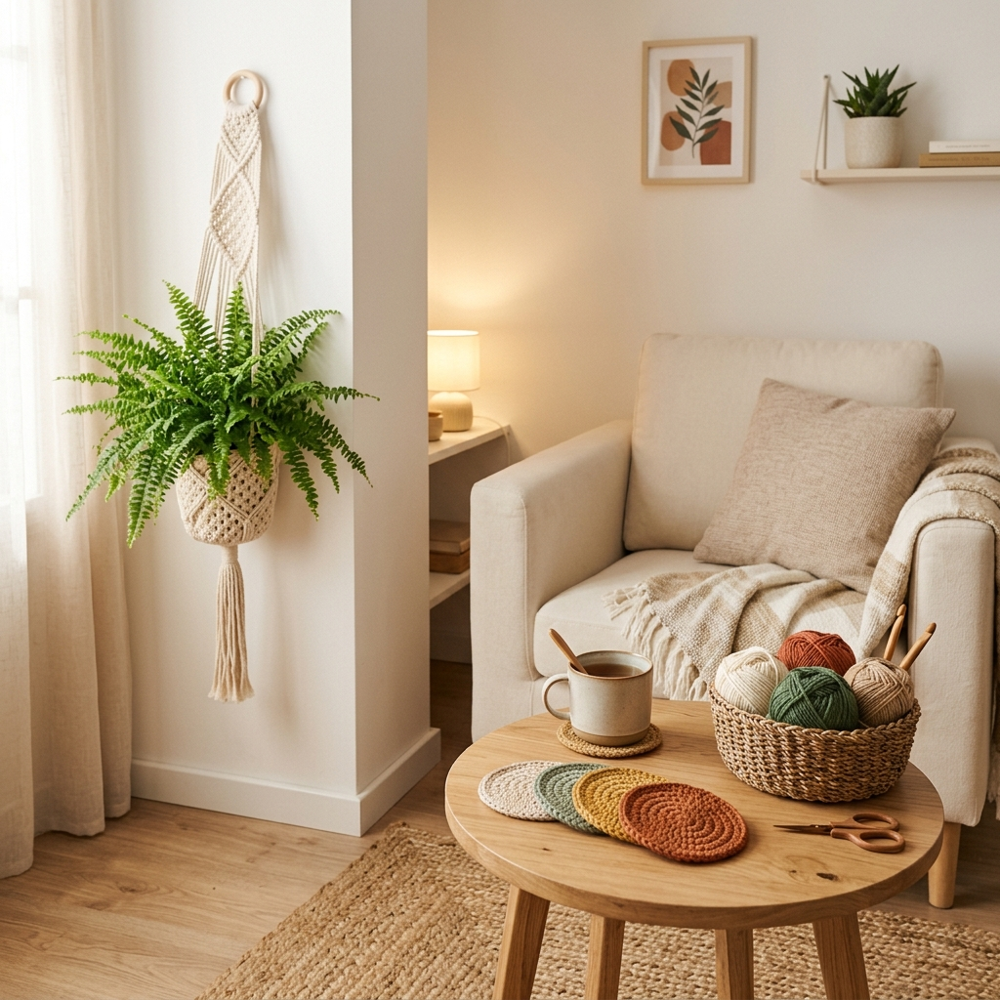
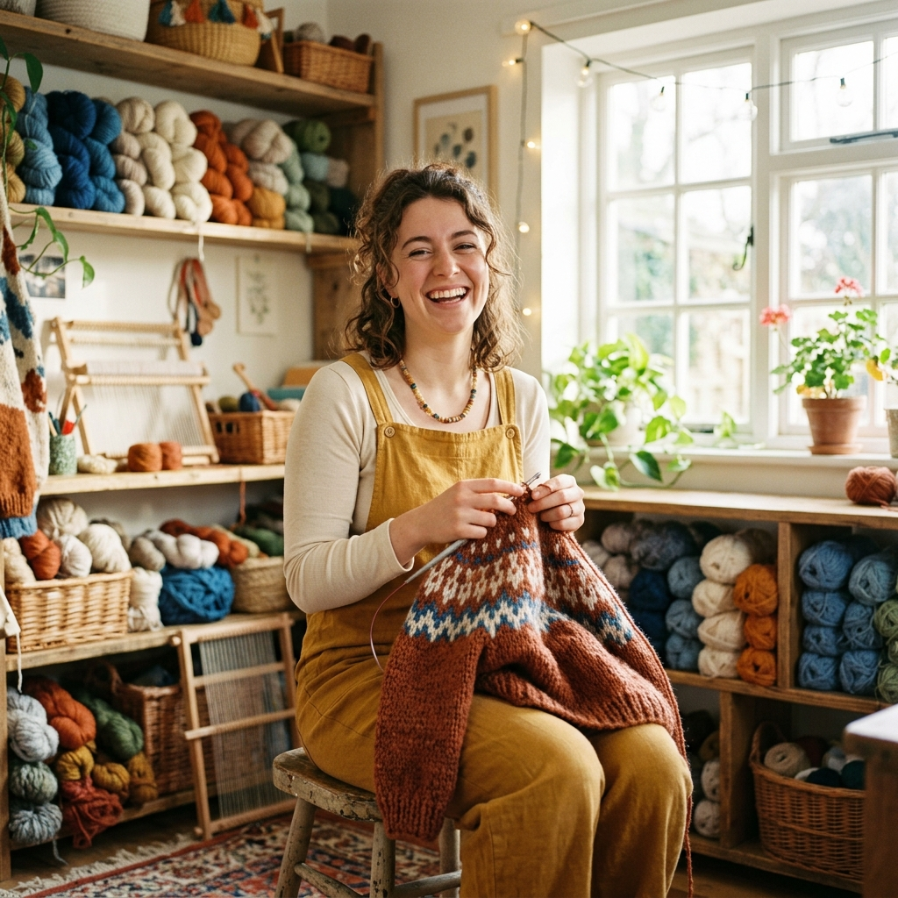

L'Art du Fil &
du Doux Sur-Mesure
Bienvenue dans l'univers chaleureux de mes créations au crochet et tricot. Des doudous amigurumis magiques, des gilets doudounes moelleux et des décorations poétiques façonnés fil par fil avec passion.

100% Artisanal
Chaque maille est crochetée à la main avec une attention infinie aux détails.
Matières Éco-Responsables
Utilisation exclusive de laines bio, coton recyclé et garnitures certifiées.
Personnalisation Totale
Choisissez vos couleurs, tailles et motifs pour un objet unique à votre image.
Emballage Poétique
Livré dans un coffret soigné avec une carte manuscrite et des petites attentions.
Galerie des Créations
Explorez mes réalisations récentes en crochet et tricot. Chaque pièce raconte une histoire douce et chaleureuse.

Coup de cœurDoudous "Léo & Barnabé"
Peluches crochetées au fil chenille ultra-doux hypoallergénique. Hauteur 28cm.

NouveautéGilet "Nuage de Laine"
Cardigan oversize aux tons rose poudré et crème, tricoté à la main en laine mérinos bio.

Pièce UniqueSuspension & Untersetzer Bohème
Set déco d'intérieur tissé en coton peigné terre cuite et sauge avec anneaux en bois brut.
Duo Hiver "Hygge Warmth"
Bonnet à pompon et col snood tricotés en torsades avec une laine alpaga d'une douceur infinie.
Petit Renard "Rustique"
Doudou articulé en fil de coton terracotta et blanc cassé. Yeux de sécurité brodés main.
Sac Cabas "Granny Vintage"
Sac porté épaule constitué de 18 carrés retro aux nuances pastel et anses en cuir véritable.
Plaid Naissance "Cocon Douillet"
Couverture de berceau 80x100cm tricotée au point mousse en laine mérinos thermorégulatrice.
Duo Baskets "Corde & Sauvage"
Paniers vides-poches rigides en cordage de coton recyclé 5mm. Idéal pour la chambre ou la salle de bain.

"Transformer un simple brin de laine en un objet chaleureux qui apporte du bonheur au quotidien."
— Clémence, FondatriceLa passion du Fait Main avec Amour
Depuis mon plus jeune âge, j'ai toujours été fascinée par la magie de la création manuelle. Transmis par ma grand-mère, l'art du crochet et du tricot est vite devenu bien plus qu'un passe-temps : une véritable méditation créative et une façon de créer de la douceur autour de moi.
Dans mon petit atelier baigné de lumière naturelle, je choisis méticuleusement chaque écheveau de laine pour sa texture, sa durabilité et ses teintures écologiques. Aucune machine, aucune grande série : seulement de la patience, de l'amour et des heures d'attention pour des pièces destinées à durer toute une vie.
100% Pièces Éthiques
Sélection de fils bio certifiés Oeko-Tex et GOTS respectueux des peaux sensibles.
Projet Sur-Mesure
Co-création complète : du croquis au choix de la nuance exacte pour concrétiser vos idées.
Zéro Déchet
Réutilisation de toutes les chutes de fil pour le rembourrage de nos doudous écologiques.
Les 4 Étapes de Fabrication
Comment vos créations prennent vie dans l'atelier
Écoute & Croquis
Échange sur votre envie, choix du modèle, du gabarit et de la palette idéale.
Choix des Fils
Sélection des fibres les plus adaptées (mérinos, coton peigné, chenille velours).
Crochetage Soigné
Façonnage minutieux maille par maille avec plusieurs heures de travail passionné.
Envoi Féerique
Vérification qualité, emballage cadeau raffiné et expédition rapide chez vous.
Mes Services Artisanaux
Du doudou personnalisé aux ateliers d'initiation, découvrez les multiples manières de partager l'univers du fil.
Créations doudous & Naissance
Peluches amigurumis, anneaux de dentition, doudous plats et coffrets cadeaux personnalisés avec le prénom du bébé brodé.
- Yeux sécurisés ou brodés
- Fil 100% coton lavable
- Certifié adapté dès la naissance
Gilets & Accessoires Tricotés
Vêtements et accessoires d'hiver sur-mesure pour enfants et adultes. Cardigans oversize, bonnets, écharpes et mitaines douillettes.
- Prise de mesures personnalisée
- Laines nobles (Alpaga, Mérinos)
- Modèles originaux & confortables
Déco d'Intérieur & Macramé
Sublimez votre intérieur avec une touche bohème et cocooning : cache-pots suspendus, corbeilles, coussins et plaids tricotés main.
- Dimensions adaptées à vos meubles
- Nuances harmonisées avec votre déco
- Matériaux solides & lavables
Cours & Ateliers de Crochet
Apprenez à crocheter ou perfectionnez vos points lors d'ateliers en petit groupe ou en cours particulier (en présentiel ou en ligne).
- Matériel & laine fournis
- Livret pas à pas offert
- Ambiance conviviale & gourmande
Configurez votre Création Unique
Testez notre simulateur interactif pour concevoir votre projet sur-mesure et obtenir une estimation instantanée.
1. Choisissez le type de création
2. Choisissez la palette principale
3. Options de personnalisation
Résumé de votre projet
En directCe qu'ils disent de mes Créations
Rien ne me fait plus chaud au cœur que de lire vos réactions à la réception de vos colis.
Tout ce que vous devez Savoir
Chaque pièce étant réalisée entièrement à la main, les délais varient entre 5 et 14 jours selon la complexité du modèle et le carnet de commandes en cours. Un délai précis vous est indiqué dès la validation de votre devis.
Il est recommandé de laver les doudous et vêtements à la main ou en machine en programme délicat/laine à 30°C max avec une lessive douce. Séchage à plat impératif sur une serviette (pas de sèche-linge).
Absolument ! J'utilise du fil 100% coton peigné certifié Oeko-Tex Standard 100 sans substances nocives. Pour les bébés, je privilégie les yeux entièrement brodés à la main plutôt que les yeux de sécurité en plastique.
Les envois sont réalisés via Colissimo suivi ou Mondial Relay vers la France, la Belgique, la Suisse et toute l'Europe. Chaque colis est emballé avec soin dans du papier de soie et un carton recyclable.
Prenons Contact
Une question, un projet sur-mesure ou une envie de collaboration ? Envoyez-moi un message, je vous répondrai sous 24h !
Coordonnées de l'Atelier
N'hésitez pas à me contacter directement ou à me suivre sur mes réseaux sociaux pour découvrir les coulisses de l'atelier.